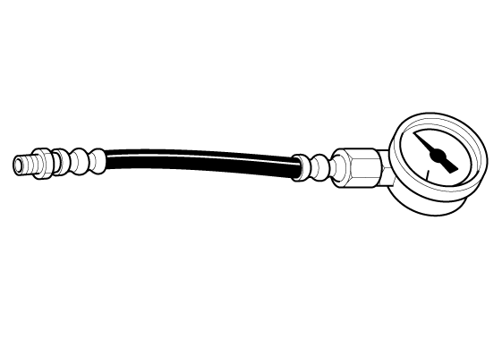
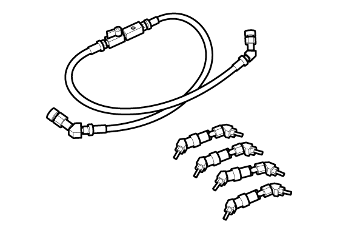

LEMON Manuals
: Even more car manuals for everyone: 1960-2025
Home
>>
Honda
>>
2016
>>
Civic LX, 4D Sedan, Automatic CVT Trans
>>
Repair and Diagnosis
>>
Engine Mechanical
>>
Fuel System
>>
Fuel And Emissions - Testing & Troubleshooting
>>
Test
>>
Fuel Pressure Test (K20C1) (2017 2018 2019 2020 2021)
>>
Notes
Fuel Pressure Test (K20C1) (2017 2018 2019 2020 2021): Notes
Special Tools Required
Image
Description/Tool Number

Courtesy of HONDA, U.S.A., INC.
Fuel Pressure Gauge 07406-004000B

Courtesy of HONDA, U.S.A., INC.
Fuel Pressure Gauge Attachment Set 07AAJ-S6MA150